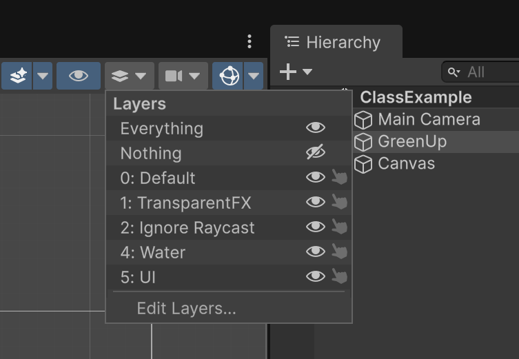
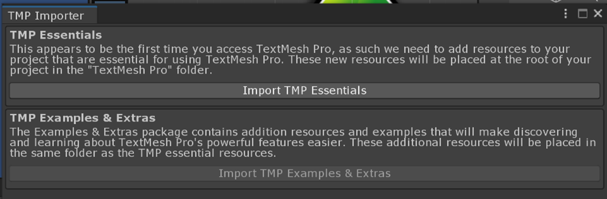

Object Control, Interaction + User Interface
Coverage
Unity-specific skills you will need, practice, and demonstrate:
◆GameObjects & components
- Finding GameObjects and accessing components
- Accessing variables of components
- Setting a component reference in the editor
⧉Prefabs
- Create a prefab in the editor
- Create/delete objects at run time
↻Transform
- Set positions
- Set rotation/orientation
- Object collisions and responses
▣User interface
- World position from the mouse
- Referencing components from variables
- Game world vs UI coordinate systems
- UI RectTransform
- Event vs polling
⬇Packages
- Create and import packages
📖Useful API reference
Concepts you will explore and understand
- Direct object control: driving an object
- Frame update time vs wall-clock real time
- System and component re-use
- Approximating object bounds with colliders
- Coordinate systems for gameplay and user interactions
- Event driven vs polling user interactions
Examples for Module 2
Object Navigation
GreenArrowBehavior.csOrganization
- Created a new folder in Assets, Scripts, to organize the scripts.
- Subfolders in Scripts (for now): Hero (supports GreenUp).
GreenArrowBehavior
- W S: move forward/back along
transform.up; A D: rotate. - Initialization of color in
Start(), and checking for errors withDebug.Assert. Debug.Log: prints the current mode; output shows in the Console panel (Window › Panels › Console).- Notice the options for getting the reference to the Camera on the Main Camera:
mTheCamera: set in the editorCamera.mainGameObject.Find("Main Camera").GetComponent<Camera>()
- How to get a component on this object:
GetComponent<SpriteRenderer>().color
Public variables
Public variables show up in the Inspector, and you can change them at runtime through the editor!
mTheCamera: reference to the Camera component on the Main Camera (must be set in the editor)!- Mouse vs keyboard control can be toggled.
- Travel speed and rotation speed can be controlled.
Speed: distance per unit time
Update() is called about 60 times per second!
mHeroSpeed: units per second. Unity'sTime.smoothDeltaTimeconverts the frame update period to wall-clock time.- Remember, the total height of the world is 200 units. Verify that traveling from top to bottom takes about 10 seconds.
mHeroRotateSpeed: 45 degrees/second, so a full 360-degree rotation takes about 8 seconds.
Mouse position
The pixel position must be translated into camera space.
- Make sure to zero out the z-component.
- The actual position must be transformed by the Camera (Main Camera). Alternate ways to access the Main Camera:
Camera.main, andGameObject.Find().
Event vs state
| Kind | Example | True when… |
|---|---|---|
| Event | Space bar: wasPressedThisFrame | Only once, in the frame the key goes down |
| State | WASD: isPressed | As long as the key is held |
Navigation
Move toward the object's own y-direction, which is transform.up:
newPosition = oldPosition + (Speed * Time.smoothDeltaTime * transform.up);Rotate left/right: rotation with respect to the z-axis, or transform.forward:
transform.Rotate(transform.forward, RotateSpeed * Time.smoothDeltaTime);- Source code (script) organization is important! Strategy: organize using a folder structure.
- Unity's function-calling sequence:
Awake→Start→Update(every frame). Don't write a constructor for aMonoBehaviour; Unity creates the component, so do your setup inAwake()orStart(). - Setting a component reference in the editor (
mTheCamera) - Locating objects:
GameObject.Find()finds any object by name, and returnsnullif not found. - Unity components: you can always call
gameObject.GetComponent<ComponentClassName>()to access a component on an object.gameObjectis a variable that references the hosting GameObject.- Returns
nullif a component of that data type is not found.
- Public variables show up in the Inspector window: convenient! But configuring them in the editor while the game is running will not be saved.
[SerializeField]: note thatmHeroRotateSpeedis private and yet visible in the editor.
- Frame rate vs real-time wall clock:
Time.smoothDeltaTime - Accessing the mouse position (via the camera!)
- Navigating an object with the keyboard
- Moving forward: the
transform.up/forward/rightvariables. These directions update as you change the object's orientation. - Rotating:
transform.Rotatechanges thetransform.up(forward/right) directions!
- Moving forward: the
- In mouse mode,
GreenArrowBehaviorsetsp.z = 0fafterScreenToWorldPoint(). What would you see if that line were removed?Show answer
The arrow would disappear.
ScreenToWorldPoint()of the mouse position returns a point at the camera's own z, -10. An object at z = -10 is closer to the camera than its Near plane (0.3 in front of it), so it isn't drawn. That's why the notes say zeroing z is very important. - In keyboard mode, you hold A until the arrow points left, then hold W. Which way does it move? How is that different from 1.2?
Show answer
It moves left, the way the arrow points, because W adds
transform.up, and rotating changestransform.up. In 1.2, W added to the y value, so the arrow always moved up the screen whatever its rotation. mHeroRotateSpeedisprivatewith[SerializeField]. You can change it in the Inspector, so can another script, such as a GameManager, read or set it too?Show answer
No.
[SerializeField]only lets the editor show and save a private field. To C# code it's still private, so other scripts can't use it. They'd need it to bepublic, or a public method that returns or sets it.
Prefab
Prefab: “programming by example”
- Drag an object (Egg) from the Hierarchy/Scene window into Assets!
- Created a subfolder to keep the Assets folder organized.
Resources.Load() depends on it!EggBehavior
- Spawns and travels in the
transform.updirection. - Kills itself after a fixed number of updates (300 frames).
GreenArrowBehavior.cs::Update() Egg spawning
- How to load and instantiate from the Resources folder.
- After instantiating, you can change the new object's values (e.g.,
localPosition).
- How to create and use prefabs in the editor:
- Drag a GameObject into the Assets folder.
- Drag a prefab back into the Scene window.
- Warning: changing an instance of a prefab does not change the prefab.
- Organization of prefabs: prefabs loaded with
Resources.Load()must be in a Resources folder (under Assets). - How to instantiate a prefab at run time.
- How to delete (
Destroy) a GameObject.- Note: as in C++, you create, you delete. If you don't delete, it will be there forever!
EggBehaviormoves atkEggSpeed= 40 units per second and destroys itself afterkLifeTime= 300 updates. How far does an egg travel at 60 frames per second? At 30?Show answer
At 60 fps, 300 updates take 5 seconds, so the egg travels 40 × 5 = 200 units. At 30 fps they take 10 seconds, so it travels 400 units. The speed is per second, but the lifetime is per frame, so the range depends on the frame rate. A lifetime in seconds (counted with
Time.smoothDeltaTimeorTime.time) would fix it.- Suppose GreenUp could rotate. A new egg is placed at GreenUp's position, and
EggBehaviormoves it alongtransform.up. Would it fly the way GreenUp points?Show answer
No. The spawn code sets only the egg's position, so the egg keeps the prefab's rotation and always flies straight up. To fire it the way GreenUp points, also set its direction, e.g.,
e.transform.up = transform.up;(or copytransform.rotation).
Game Manager + Simple UI Text
Create UI
- Right-click in the Hierarchy window: UI (Canvas) › Text - TextMeshPro (or GameObject › UI (Canvas) › Text - TextMeshPro from the menu bar). Canvas and EventSystem are created automatically if they're not already there.
- UI elements must be children of the Canvas; otherwise they won't be visible.
- Zoom out to see the two spaces: Camera and UI.
- UI elements are in pixel space (not camera space)! The size of UI space corresponds 1:1 to the Game window.
- Use the Layers menu to show/hide UI (top menu bar of the Scene Window).

UI TextMeshPro (TMP)
Always use TextMeshPro (UI (Canvas) › Text - TextMeshPro), not the old UI (Canvas) › Legacy › Text.
- TextMeshPro is built into Unity's UI package, but you'll have to import the TMP Essential Resources (fonts and shaders).
- The first time you create a TMP Text, you'll see the TMP Importer:

In your script, e.g., in GameManager.cs:
using TMPro; // The library to use
public TMP_Text mEggCountEcho = null; // The variable data type to useGreenArrowBehavior
- Includes an
intto keep track of the number of eggs on screen.
EggBehavior
- Static variable: refers to GreenArrowBehavior. What is a “static” variable?
- Asks the GameManager (
sTheGlobalBehavior) whether the egg is within the camera's bounds. - Tells GreenArrowBehavior when an egg is destroyed.
GameManager: central object that coordinates the entire game state
- Hangs off an empty GameObject (GameManager); it can also hang off the MainCamera (always there).
- Singleton pattern: one instance in the world, “well-known”. A
staticvariable is a global variable! - Plays the important role of “central coordinator”:
- connects GreenArrowBehavior to EggBehavior
- central place for echoing the state of the game
- Two public variables must be set in the editor before the game starts:
- GreenArrowBehavior, and
- the
TMP_Textfor echoing egg status (UI-Canvas › EggStatusEcho, aTMP_Textobject).
IsInCameraBound(Vector3 pt): Determines ifptis inside the camera bound !
- GameManager: you need a central coordinator, and often enforce having only one.
staticdeclaration in a class- Class variables persist for the entire process lifetime, and across levels (scenes).
- UI: two objects are created automatically:
- A Canvas: all UI elements must be children of it (otherwise they won't be visible).
- An EventSystem: I drag it to be a child of the Canvas, for organization.
- Default UI layer: to see or not to see.
- Coordinate systems: you work with two separate groups of objects, GameObjects and UI, in two distinct coordinate systems!
- GameObjects: arbitrary units
- UI: pixels
- Canvas and placement of GUI elements:
- Canvas: UI Canvas - Unity Official Tutorials ↗
- Rect Transform: Rect Transform - Unity Official Tutorials ↗
- UI element positions are not relative to the main camera! They're relative to the Canvas (in pixels!).
- In
EggBehavior,Destroy(transform.gameObject);comes beforesGreenArrow.OneLessEgg();. DoesOneLessEgg()still run, and does the egg count stay correct?Show answer
Yes to both.
Destroy()only marks the object for removal; Unity removes it at the end of the current frame. The rest ofUpdate()keeps running, soOneLessEgg()is called and the count stays correct. - The GameManager sets
sTheGlobalBehaviorinStart(). Another script'sStart()callsGameManager.sTheGlobalBehavior.IsInCameraBound(...). Is that safe? What would make it safe?Show answer
It isn't guaranteed. Unity doesn't promise which object's
Start()runs first, sosTheGlobalBehaviormay still benull. Setting it inAwake()instead makes it safe, because everyAwake()runs before anyStart(). Example 3.2 does exactly this. (Here it works because eggs only use it inUpdate().) - EggStatusEcho is anchored to the Canvas's lower-left corner, about (134, 34) pixels in. You make the Game window much bigger. Where does the text appear?
Show answer
Still about (134, 34) pixels from the lower-left corner. A UI element's position is measured from its anchor, so it keeps its distance from that corner. It doesn't stretch or move toward the middle the way a world object would when the camera's view changes.
User Interface and Packages
Package import
- Assets › Import Package › Custom Package…: select
SliderWithEcho.unitypackage(in theOur-Packagesfolder of the class notes).- Prefab:
Resources/Prefabs/SliderWithEcho.prefab Scripts/UI/SliderWithEcho.cs
- Prefab:
- To create your own package, do the reverse: Assets › Export Package… and select the appropriate components (remember to select the necessary scripts).
UI: using the imported package
- Your scene must first have a Canvas (create one with UI (Canvas) › Canvas).
- Drag the
SliderWithEchoprefab into the Canvas and align its anchor to the lower-left. - Rename it to SpawnRate.
- Configure it (select SpawnRate and look in the Inspector window):
mLabelText- SliderValue (a Text UI object): customize the text details, e.g., color
- SliderBar (in the Slider component): set Min Value, Max Value and Init Value
GreenArrowBehavior: references a SliderWithEcho
- In the editor, drag the entire SliderWithEcho (SpawnRate) onto the mSpawnRate of the GreenArrowBehavior object.
- The
value()of SpawnRate is how many seconds to wait between spawning new eggs. Time.time: the number of seconds elapsed since the beginning of the game.
- Almost all Unity-specific:
Time.time: time (in seconds) since the game began- Packages: when importing/exporting a prefab, check all its dependent components
- Note the spawn-rate check logic in
GreenArrowBehavior::Update().
Alternate implementation
SpawnRate › SliderBar has a callback (event handler). You can define a function in GreenArrowBehavior and add it here.
Update().I usually poll UI events in the Update() function.
- The SpawnRate slider is at
0.5. You hold Space for 3 seconds. About how many eggs appear?Show answer
About 6. While Space is held,
Update()spawns an egg only when more than 0.5 seconds have passed since the last one (Time.time - mEggSpawnAt > mSpawnRate.value()), so it's one egg roughly every half second. - A classmate exports a package with only
SliderWithEcho.prefaband forgetsSliderWithEcho.cs. You import it into a new project. What goes wrong?Show answer
The prefab's script component shows up as missing (“The referenced script… is missing”), so the slider moves but the echo text never updates and nothing can call
value(). When exporting, include every script and asset the prefab depends on.
Cool Down Bar
Package import
- Assets › Import Package › Custom Package…: select
CoolDownBar.unitypackage(in theOur-Packagesfolder of the class notes).- Prefab:
Resources/Prefabs/CoolDownBar.prefab Scripts/UI/CoolDownBar.cs
- Prefab:
UI: using the imported package
- Remember: you must have a Canvas (create one with UI (Canvas) › Canvas).
GreenArrowBehavior: references a SliderWithEcho and a CoolDownBar
- In the editor, connect the CoolDownBar UI to the instance variable.
- Note: the re-spawn time restriction logic is now hidden.
- The slider is at
1. You fire an egg, then right away drag the slider to0.2. When can you fire again?Show answer
Almost immediately: about 0.2 seconds after the first shot.
GreenArrowBehaviorcallsmCoolDown.SetCoolDownLength(mSpawnRate.value())every frame, so the running cool-down uses the new, shorter length, and the bar jumps to match. - You add a second GreenUp and connect both arrows to the same CoolDownBar. What happens when one of them fires?
Show answer
The other one has to wait too. Both arrows ask the same CoolDownBar object whether it's
ReadyForNext(), so one cool-down is shared. For separate cool-downs, give each arrow its own CoolDownBar.
Collision + Color + Texture
- You must run, then move objects in the editor so the two overlap.
- Move either object to collide the two.
- Wiggle the Plane or GreenUp to see the Plane disappear and regenerate as an Egg.
- GreenUp moves whatever it touches to the origin.
How Unity collision works: conceptual model, mechanics and cost
- The GreenUp and the Plane want to collide.
- Requirements: both must have a Collider2D, and at least one must have a Rigidbody2D.
- I looked at this: How to detect collision without Rigidbody ↗
- Note: this is not physics, just collision detection. We'll look at Unity physics a little later.
- In this example, the GreenUp has a Rigidbody and the Plane does not:
- two GreenUps can collide
- a GreenUp can collide with a Plane
- two Planes cannot collide
| Object | Setup |
|---|---|
| GreenUp | The object that wants to handle the collision.
|
| Plane |
|
Try
- Toggle on/off the Plane's collider's Is Trigger
(its script's
OnTrigger…2Dfunctions will be called in both cases). - When should Is Trigger be on? Only the “actively colliding objects” need it.
Example My car is driving down the road, and I want it to collide with all the objects in the world. My car is the “actively colliding object”, so its Is Trigger should be on. The rest of the objects aren't actively colliding with anything, so I shouldn't switch on their Is Trigger. It's all about performance!
Scripts
- GreenUp (
Arrow.cs):OnTriggerEnter2D()andOnTriggerStay2D() - Plane (
PlaneBehavior.cs):OnTriggerEnter2D()andOnTriggerStay2D()→ callUpdateColor() - In Unity, the
OnTrigger…2D()functions are distinct from theOnCollision…2D()functions, although both report when two objects intersect:OnTriggerEnter2D/Stay2D/Exit2D(): tells you two objects have touched, and you decide what to do.OnCollisionEnter2D/Stay2D/Exit2D(): defines what happens and how to respond after the two objects intersect. We'll learn about this in Module 5.
OnTriggerStay2D() is called while the two objects overlap, but only while the Rigidbody2D is awake. Once nothing moves, the Rigidbody2D falls asleep and the calls stop; moving either object wakes it, and the calls resume.Texture/sprite loading
- See
Resources.Load()↗. - Notice
GetComponent<aComponent>(): look in the editor's Inspector window; every component can be accessed! - SpriteRenderer: color + sprite, adjustable in the UI or from a script.
ObjA.OnTriggerEnter2D() will be called twice!- How to enable and work with Unity 2D collisions, and receive the collision function calls to respond
- How to change the color/transparency of an object at run time
- How to change the texture of an object at run time
- You remove the Rigidbody2D from GreenUp, keeping both colliders. You run and drag GreenUp onto the Plane. What happens?
Show answer
Nothing: no
OnTrigger…2D()function is called on either object. A collision needs at least one Rigidbody2D, and GreenUp's was the only one. - The Plane's collider has Is Trigger off; only GreenUp's is on. When they touch, does
PlaneBehavior.OnTriggerEnter2D()run?Show answer
Yes. When either collider in a touching pair is a trigger, Unity sends the trigger messages to the scripts on both objects. So the Plane fades even though its own Is Trigger is off.
In-class self-exercise 2
Once again, my solution is available at the end of the document.